你的电脑需要具备PHP开发环境，如果不具备，可以参考我的上一篇文章VS Code配置PHP
Apache 下载地址 https://www.apachehaus.com/cgi-bin/download.plx 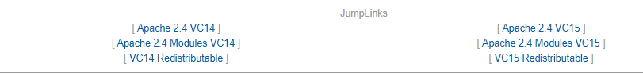 我也传了一个蓝奏云，https://www.lanzous.com/i5cns8b
在解压出来的Apache conf目录下，找到httpd.conf并打开,将Define SRVROOT后改为自己的APache 绝对位置，图片为我的目录位置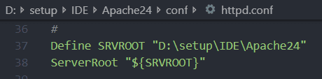更改serverName如图，图片中默认使用80端口，如需更改，更改即可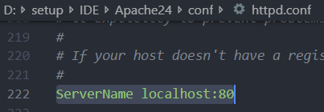
如果你想指定你编写网页的路径，即Apache打开的默认位置，需要修改DocumentRoot项为指定绝对目录，默认为Apache 下的htdocs目录。比如我修改为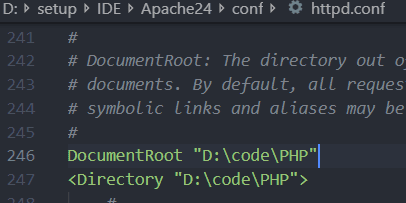可以更改默认打开的文件，默认为 DocumentRoot 目录下index.html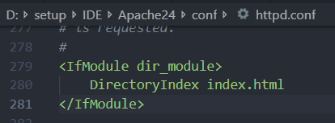
然后拉到最下面，将Include conf/extra/httpd-fcgid.conf取消注释，该项待会用来指定PHP目录。如图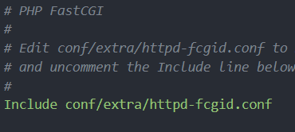然后我们在extra文件夹下找到httpd-fcgid.conf，将Define PHPLOC后改为自己的PHP绝对路径，如图为我的PHP目录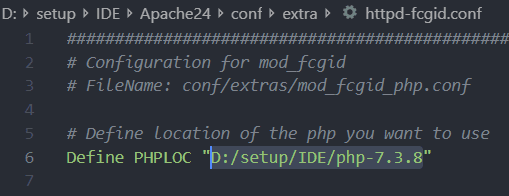
目前我就修改了这些，能够很好的满足我的需求，若你还有其他需求，仔细看看配置的注释，说不定会找到答案。
httpd所在的bin目录添加到环境变量
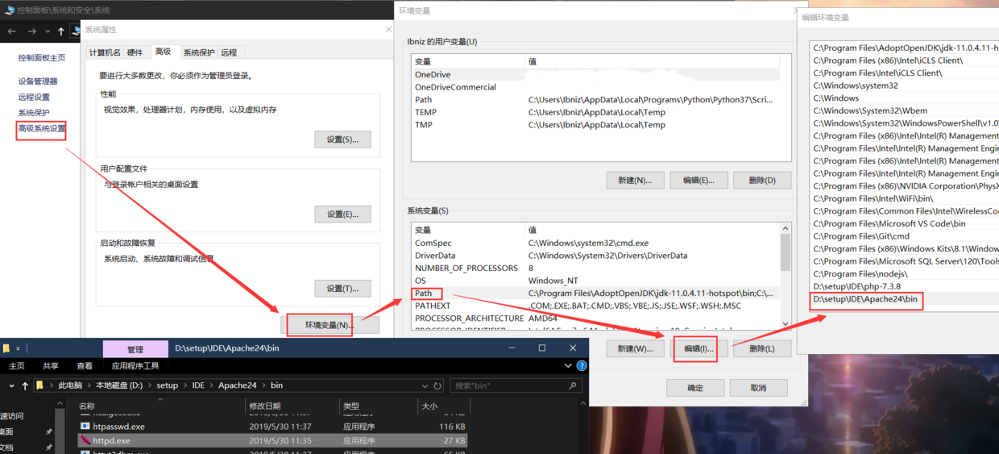
使用管理员权限运行powershell 执行如下两条命令，可以将运行powershell所在的目录添加到环境变量$p1=[Environment]::GetEnvironmentvariable("Path", "Machine")
[environment]::SetEnvironmentvariable("Path",$p1+ ";$pwd",[System.EnvironmentVariableTarget]::Machine)
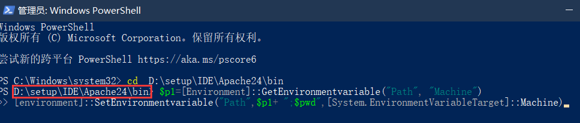
首先，在powershell中输入httpd -t来检查配置是否存在问题，若显示OK，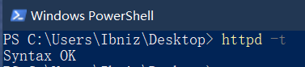
即可进行安装，输入httpd -k install安装Apache，安装完成，httpd -k start启动服务,也可以到bin目录下找到ApacheMonitor启动服务、查看服务状态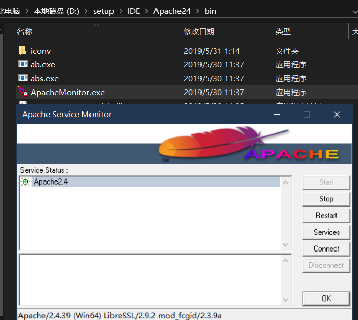
如果你未更改DocumentRoot在浏览器输入localhost可以看到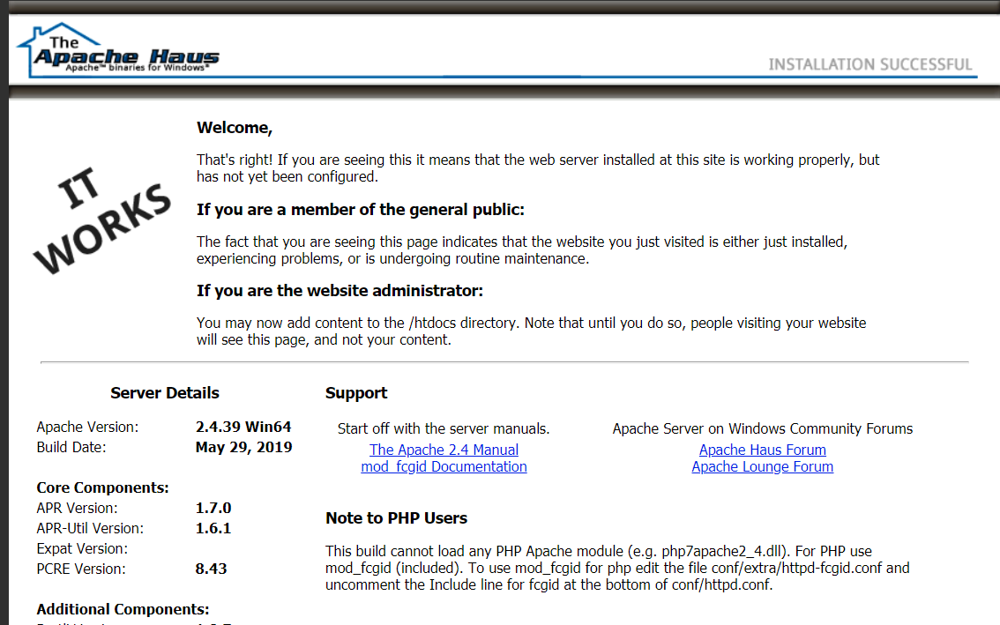
我更改了目录，并且目录下没有 index.html，会显示DocumentRoot目录，如图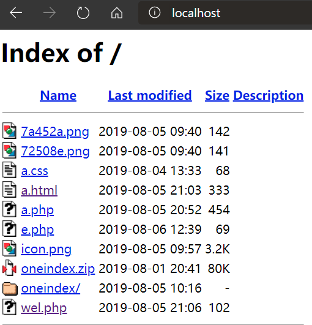
写一个简单的代码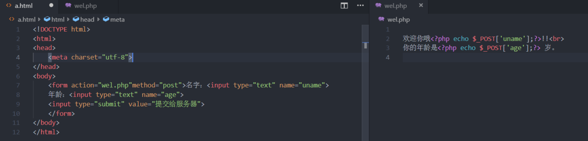
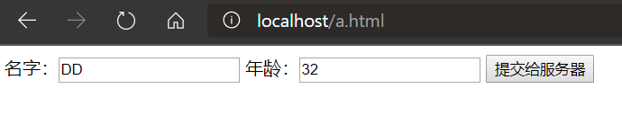
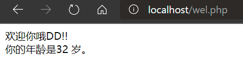
可以看到成功执行。现在在就可以在windows下愉快的写网站了。
httpd.exe -k install
httpd.exe -k install -n "MyServiceName"
httpd.exe -k install -n "MyServiceName" -f "c:\files\my.conf"
注：若不使用特殊参数（如httpd.exe -k install），服务名称为Apache2.X，配置文件为conf\httpd.conf 4) 移除一个Apache服务
httpd.exe -k uninstall
httpd.exe -k uninstall -n "MyServiceName"
httpd.exe -k start
httpd.exe -k stop || httpd.exe -k shutdown
httpd.exe -k restart